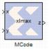

The Xilinx MCode block is a container for executing a user-supplied MATLAB function within Simulink. A parameter on the block specifies the M-function name. The block executes the M-code to calculate block outputs during a Simulink simulation. The same code is translated in a straightforward way into equivalent behavioral VHDL/Verilog when hardware is generated.
The block's Simulink interface is derived from the MATLAB function signature, and from block mask parameters. There is one input port for each parameter to the function, and one output port for each value the function returns. Port names and ordering correspond to the names and ordering of parameters and return values.
The MCode block supports a limited subset of the MATLAB language that is useful for implementing arithmetic functions, finite state machines and control logic.
The MCode block has the following three primary coding guidelines that must be followed:
The topic Compiling MATLAB into an FPGA shows three examples of functions for the
MCode block. The first example (also described below) consists of a function
xlmax which returns the maximum of its inputs. The second illustrates how to do simple arithmetic. The third shows how to build a finite state machine. These examples are linked from the topic titled
Additional Examples and Tutorials .
The MATLAB Function parameter of an
MCode block specifies the name of the block's M- code function. This function must exist in one of the three locations at the time this parameter is set. The three possible locations are:
An MCode block based on the function
xlmax will have input ports
x and
y and output port
z.
Once the model is compiled, the xlmax MCode block will appear like the block illustrated below.
The MCode block supports the following MATLAB language constructs:
The MCode block supports the following MATLAB functions.
|
•
|
Type conversion. The only supported data type is xfix, the Xilinx fixed-point type. The xfix() type conversion function is used to convert to this type. The conversion is done implicitly for integers but must be done explicitly for floating point constants. All values must be scalar; arrays are not supported.
|
There are three kinds of xfix data types: unsigned fixed-point (
xlUnsigned), signed fixed-point(
xlSigned), and boolean (
xlBoolean). Arithmetic operations on these data types produce signed and unsigned fixed-point values. Relational operators produce a boolean result. Relational operands can be any
xfix type, provided the mixture of types makes sense. Boolean variables can be compared to boolean variables, but not to fixed-point numbers; boolean variables are incompatible with arithmetic operators. Logical operators can only be applied to boolean variables. Every operation is performed in full precision, i.e., with the minimum precision needed to guarantee that no information is lost.
Integer, floating-point, and boolean literals are supported. Integer literals are automatically converted to
xfix values of appropriate width having a binary point position at zero. Floating-point literals must be converted to the
xfix type explicitly with the
xfix() conversion function. The predefined MATLAB values
true and
false are automatically converted to boolean literals.
The conditional expression of an if statement must evaluate to a boolean. Switch statements can contain a
case clause and an
otherwise clause. The types of a switch selector and its cases must be compatible; thus, the selector can be boolean provided its cases are. All cases in a
switch must be constant; equivalently, no
case can depend on an input value.
is acceptable only if a and
b are both boolean or both arithmetic.
The xfix() conversion function converts a
double to an
xfix, or changes one
xfix into another having different characteristics. A call on the conversion function looks like the following
Here x is the variable that receives the
xfix.
type_spec is a cell array that specifies the type of
xfix to create, and value is the value being operated on. The
value can be floating point or
xfix type. The
type_spec cell array is defined using curly braces in the usual MATLAB method. For example,
returns an xfix approximation to
pi. The approximation is signed, occupies 20 bits (16 fractional), quantizes by rounding, and wraps on overflow.
The type_spec consists of 1, 3, or 5 elements. Some elements can be omitted. When elements are omitted, default element settings are used. The elements specify the following properties (in the order presented):
data type,
width,
binary point position,
quantization mode, and
overflow mode. The
data type can be
xlBoolean,
xlUnsigned, or
xlSigned. When the type is
xlBoolean, additional elements are not needed (and must not be supplied). For other types,
width and
binary point position must be supplied. The
quantization and
overflow modes are optional, but when one is specified, the other must be as well. Three values are possible for quantization:
xlTruncate,
xlRound, and
xlRoundBanker. The default is
xlTruncate. Similarly, three values are possible for overflow:
xlWrap,
xlSaturate, and
xlThrowOverflow. For
xlThrowOverflow, if an overflow occurs during simulation, an exception occurs.
All values in a type_spec must be known at compilation time; equivalently, no
type_spec value can depend on an input to the function.
This assignment to x is the result of converting
x + y to an unsigned fixed-point number that is 10 bits wide with 4 fractional bits using
xlTruncate for quantization and
xlWrap for overflow.
If several xfix() calls need the same
type_spec value, you can assign the
type_spec to a variable, then use the variable for
xfix() calls. For example, the following is allowed:
Each xfix number has three properties: the arithmetic type, the bit width, and the binary point position. The
MCode blocks provide three functions to get these properties of a fixed- point number. The results of these functions are constants and will be evaluated when Simulink compiles the model.
Function a = xl_arith(x) returns the arithmetic type of the input number
x. The return value is either
1,
2, or
3 for
xlUnsigned,
xlSigned, or
xlBoolean respectively.
Function n = xl_nbits(x) returns the width of the input number
x.
Function b = xl_binpt(x) returns the binary point position of the input number
x.
The MCode block provides four built-in functions for bit-wise logical operations:
xl_or,
xl_and,
xl_xor, and
xl_not.
Function xl_or,
xl_and, and
xl_xor perform bit-wise logical or, and, and xor operations respectively. Each function is in the form of
Function xl_not performs a bit-wise logical not operation. It is in the form of
x = xl_not(a). It only takes one
xfix number as its input argument and returns a fixed- point number.
Functions xl_lsh and
xl_rsh allow you to shift a sequence of bits of a fixed-point number. The function is in the form:
x = xl_lsh(a, n) and
x = xl_rsh(a, n) where
a is a
xfix value and
n is the number of bits to shift.
Left or right shift the fixed-point number by n number of bits. The right shift (
xl_rsh) moves the fixed-point number toward the least significant bit. The left shift (
xl_lsh) function moves the fixed-point number toward the most significant bit. Both shift functions are a full precision shift. No bits are discarded and the precision of the output is adjusted as needed to accommodate the shifted position of the binary point.
The output b is of type
xlSigned with 21 bits and the binary point located at bit 21.
Function xl_slice allows you to access a sequence of bits of a fixed-point number. The function is in the form:
Each bit of a fixed-point number is consecutively indexed from zero for the LSB up to the MSB. For example, given an 8-bit wide number with binary point position at zero, the LSB is indexed as 0 and the MSB is indexed as 7. The block will throw an error if the
from_bit or
to_bit arguments are out of the bit index range of the input number. The result of the function call is an unsigned fixed-point number with zero binary point position.
Function x = xl_concat(hi, mid, ..., low) concatenates two or more fixed-point numbers to form a single fixed-point number. The first input argument occupies the most significant bits, and the last input argument occupies the least significant bits. The output is an unsigned fixed-point number with binary point position at zero.
Function x = xl_force(a, arith, binpt) forces the output to a new type with
arith as its new arithmetic type and
binpt as its new binary point position. The
arith argument can be one of
xlUnsigned,
xlSigned, or
xlBoolean. The
binpt argument must be from 0 to the bit width inclusively. Otherwise, the block will throw an error.
An MCode block can have internal state variables that hold their values from one simulation step to the next. A state variable is declared with the MATLAB keyword
persistent and must be initially assigned with an
xl_state function call.
init = 0;
persistent s, s = xl_state(init, {xlSigned, 4, 0});
The state variable s is declared as
persistent, and the first assignment to
s is the result of the
xl_state invocation. The
xl_state function takes two arguments. The first is the initial value and must be a constant. The second is the precision of the state variable. It can be a type cell array as described in the
xfix function call. It can also be an
xfix number. In the above code, if
s = xl_state(init, din), then state variable s will use
din as the precision. The
xl_state function must be assigned to a
persistent variable.
The xl_state function behaves in the following way:
v = xl_state(init, precision) returns the value of a state variable. The first input argument
init is the initial value, the second argument
precision is the precision for this state variable. The argument
precision can be a cell arrary in the form of
{type, nbits, binpt} or
{type, nbits, binpt, quantization,overflow}. The
precision argument can also be an
xfix number.
v = xl_state(init, precision, maxlen) returns a vector object. The vector will be initialized with
init and will have
maxlen for the maximum length it can be. The vector will be initialized with
init. For example,
v = xl_state(zeros(1, 8), prec, 8) creates a vector of 8 zeros,
v = xl_state([], prec, 8) creates an empty vector with 8 as maximum length,
v = xl_state(0, prec, 8) creates a vector of one zero as content and with 8 as the maximum length.
A method of a vector that queries a state variable is called a query method. It has a return value. The following methods are query method:
v(idx),
v.front,
v.back,
v.full,
v.empty,
v.length,
v.maxlen. A method of a vector that changes a state variable is called an
update method. An update method does not return any value. The following methods are update methods:
v(idx) = val,
v.push_front(val),
v.pop_front,
v.push_back(val),
v.pop_back, and
v.push_front_pop_back(val). All query methods of a vector must be invoked before any update method is invocation during any simulation cycle. An error will be thrown during model compilation if this rule is broken.
The MCode block may map a vector state variable into a vector of registers, a delay line, an addressable shift register, a single port ROM, or a single port RAM based on the usage of the state variable. The
xl_state function can also be used to convert a MATLAB 1-D array into a zero-indexed constant array. If the
MCode block cannot map a vector state variable into an FPGA device, an error message will be issued during model netlist time. The following are examples of using vector state variables.
persistent r, r = xl_state(zeros(1, lat), d, lat);
r.push_front_pop_back(d);
persistent r, r = xl_state(zeros(1, 4), d);
S = r(0) + r(1) + r(2) + r(3);
r.push_front_pop_back(d);
function s = myadd(a, b, c, d, nbits, binpt)
p = {xlSigned, nbits, binpt, xlRound, xlSaturate};
persistent coef, coef = xl_state([3, 7, 3.5, 6.7], p);
s = a*coef(0) + b*coef(1) + c*coef(2) + c*coef(3);
persistent r, r = xl_state(zeros(1, depth), d);
r.push_front_pop_back(d);
function q = addrsr(contents, addr, arith, nbits, binpt)
proto = {arith, nbits, binpt};
persistent mem, mem = xl_state(contents, proto);
function dout = ram(addr, we, din, depth, nbits, binpt)
proto = {xlSigned, nbits, binpt};
persistent mem, mem = xl_state(zeros(1, depth), proto);
function dout = ram(addr, we, din, depth, nbits, binpt,ram_enable)
proto = {xlSigned, nbits, binpt};
persistent mem, mem = xl_state(zeros(1, depth), proto);
persistent dout_temp, dout_temp = xl_state(0,proto);
Displays the expression value. In order to see the printing on the MATLAB console, the option
Enable printing with disp must be checked on the
Advanced tab of the
MCode block parameters dialog box. The argument can be a string, an
xfix number, or an
MCode state variable. If the argument is an
xfix number, it will print the type, binary value, and double precision value. For example, if variable
x is assigned with
xfix({xlSigned, 10, 7}, 2.75), the
disp(x) will print the following line:
If the argument is a vector state variable, disp() will print out the type, maximum length, current length, and the binary and double values of all the elements. For each simulation step, when
Enable printing with disp is on and when a
disp() function is invoked, a title line will be printed for the corresponding block. The title line includes the block name, Simulink simulation time, and FPGA clock number.
The following MCode function shows several examples of using the
disp() function.
error('latency must be a positive');
Returns true for Not-a-Number. isnan(X) returns true when
X is Not-a-Number.
X must be a scalar value of double or Xilinx fixed-point number. This function is not supported for vectors or matrices. For example:
if isnan(incr) & incr == 1
The NaN() function generates an IEEE arithmetic representation for Not-a-Number. A NaN is obtained as a result of mathematically undefined operations like 0.0/0.0 and inf-inf. NaN(1,N) generates a 1-by-N vector of NaN values. Here are examples of using NaN.
Converts a number to a string. num2str(X) converts the
X into a string.
X can be a scalar value of double, a Xilinx fixed-point number, or a vector state variable. The default number of digits is based on the magnitude of the elements of
X. Here's an example of
num2str:
if opcode <=0 | opcode >= 10
error(['opcode is out of range: ', num2str(opcode)]);
The ones() function generates a specified number of one values.
ones(1,N) generates a 1-by-N vector of ones.
ones(M,N) where
M must be 1. It's usually used with
xl_state() function call. For example, the following line creates a 1-by-4 vector state variable initialized to [1, 1, 1, 1].
The zeros() function generates a specified number of zero values.
zeros(1,N) generates a 1-by-N vector of zeros.
zero(M,N) where
M must be 1. It's usually used with
xl_state() function call. For example, the following line creates a 1-by-4 vector state variable initialized to [0, 0, 0, 0].
persitent m, m = xl_state(zeros(1, 4), proto)
FOR statement is fully unrolled. The following function sums
n samples.
persistent regs, regs = xl_state(zeros(1, 4), din);
regs.push_front_pop_back(din);
q = xl_concat(q, xl_slice(d, i, i));
MATLAB code is sequential (i.e., statements are executed in order). The MCode block requires that every possible execution path assigns a value to a variable before it is used (except as a left-hand side of an assignment). When this is the case, we say the variable is
available for use. The
MCode block will throw an error if its M-code function accesses unavailable variables.
function [x, y, z] = test1(a, b)
x = a;
if a>b
x = a + b; y = a;
end
switch a
case 0
z = a + b;
case 1
z = a – b;
end
Here a,
b, and
x are available, but
y and
z are not. Variable
y is not available because the
if statement has no
else, and variable
z is not available because the
switch statement has no
otherwise part.
There are two ways to debug your MCode. One is to insert
disp() functions in your code and enable printing; the other is to use the MATLAB debugger. For usage of the disp() function, please reference the topic
disp().
If you want to use the MATLAB debugger, you need to check the Enable MATLAB debugging option on the
Advanced tab of the
MCode block parameters dialog box. Then you can open your MATLAB function with the MATLAB editor, set break points, and debug your M-function. Just be aware that every time you modify your script, you need to execute a
clear functions command in the MATLAB console.
To start debugging your M-function, you need to first check the Enable MATLAB debugging checkbox on the
Advanced tab of the
MCode block parameters dialog, then click the
OK or
Apply button.
There is one special case to consider when the function for an MCode block is executed from the MATLAB debugger. A
switch/case expression inside an
MCode block must be type
xfix, however, executing a
switch/case expression from the MATLAB console requires that the expression be a
double or
char. To facilitate execution in the MATLAB console, a call to
double() must be added. For example, consider the follwing:
where i is type
xfix. To run from the console this code must changed to
The double() function call only has an effect when the M code is run from the console. The
MCode block ignores the
double() call.
It is possible to use the same M-function in different MCode blocks, passing different parameters to the M-function so that each block may behave differently. This is achieved by binding input arguments to some values. To bind the input arguments, select the
Interface tab on the block GUI. After you bind those arguments to some values, these M-function arguments will not be shown as input ports of the
MCode block.
The parameter passing mechanism allows the MCode block to have optional input ports. Consider for example, the following M-function:
If sub is set to be
false, the
MCode block that uses this M-function will have two input ports
a and
b and will perform full precision addition. If it is set to an empty cell array
{}, the block will have three input ports
a,
b, and
sub and will perform full precision addition or subtraction based on the value of input port
sub.
The following figure shows the block diagram of two blocks using the same xl_m_addsub function, one having two input ports and one having three input ports.
There are two ways to build a state machine using an MCode block. One way is to specify a stateless transition function using a MATLAB function and pair an
MCode block with one or more state register blocks. Usually the
MCode block drives a register with the value representing the next state, and the register feeds back the current state into the
MCode block. For this to work, the precision of the state output from the
MCode block must be static, that is, independent of any inputs to the block. Occasionally you may find you need to use
xfix() conversions to force static precision. The following code illustrates this:
function nextstate = fsm1(currentstate, din)
nextstate = currentstate;
case 0, if din==1, nextstate = 1; end
% a xfix call should be used at the end
nextstate = xfix({xlUnsigned, 2, 0}, nextstate);
persistent state, state=xl_state(0,{xlUnsigned,2,0});
case 0, if din==1; state = 1; end
The MCode block can automatically infer register reset and enable signals for state variables when conditional assignments to the variables contain two or fewer branches.
persistent r1, r1 = xl_state(0, {xlUnsigned, 2, 0});
There are two branches in the conditional assignment to persistent state variable r1. A register is used to perform the conditional assignment. The input of the register is connected to
r1 + a, the output of the register is
r1. The register's enable signal is inferred; the enable signal is connected to
en, when
en is asserted. Persistent state variable
r1 is assigned to
r1 + a when
en evaluates to
false, the enable signal on the register is de-asserted resulting in the assignment of
r1 to
r1.
persistent r1, r1 = xl_state(0, {xlUnsigned, 2, 0});
If there were three branches in the conditional assignment of persistent state variable r1, the enable signal would not be inferred. The following M-code illustrates the case where there are three branches in the conditional assignment of persistent state variable
r1 and the enable signal is not inferred:
persistent r1, r1 = xl_state(0, {xlUnsigned, 2, 0});
The reset signal can be inferred if a persistent state variable is conditionally assigned to a constant; the reset is synchronous. Consider the following M-code example which infers a reset signal for the assignment of persistent state variable
r1 to
init, a constant, when
rst evaluates to true and
r1 + 1 otherwise:
persistent r1, r1 = xl_state(0, {xlUnsigned, 4, 0});
persistent r1, r1 = xl_state(0, {xlUnsigned,4,0});
In both code examples above, the reset signal of the register containing persistent state variable
r1 is assigned to
rst. When
rst evaluates to
true, the register's reset input is asserted and the persistent state variable is assigned to constant
init. When
rst evaluates to
false, the register's reset input is de-asserted and persistent state variable
r1 is assigned to
r1 + 1. Again, if the conditional assignment of a persistent state variable contains three or more branches, a reset signal is not inferred on the persistent state variable's register.
It is possible to infer reset and enable signals on the register of a single persistent state variable. The following M-code example illustrates simultaneous inference of reset and enable signals for the persistent state variable
r1:
persistent r1, r1 = xl_state(0, {xlUnsigned, 4, 0});
The reset input for the register of persistent state variable r1 is connected to
rst; when
rst evaluates to
true, the register's reset input is asserted and
r1 is assigned to
init. The enable input of the register is connected to
en; when
en evaluates to
true, the register's enable input is asserted and
r1 is assigned to
r1 + 1. It is important to note that an inferred reset signal takes precedence over an inferred enable signal regardless of the order of the conditional assignment statements. Consider the second code example above; if both
rst and
en evaluate to
true, persistent state variable
r1 would be assigned to
init.
Inference of reset and enable signals also works for conditional assignment of persistent state variables using switch statements, provided the switch statements contain two or less branches.
The MCode block performs dead code elimination and constant propagation compiler optimizations when generating code for the FPGA. This can result in the inference of reset and/or enable signals in conditional assignment of persistent state variables, when one of the branches is never executed. For this to occur, the conditional must contain two branches that are executed after dead code is eliminated and constant propagation is performed.
The generated FPGA bitstream for an MCode block may contain many levels of combinational logic and hence a large critical path delay. To allow a downstream logic synthesis tool to automatically pipeline the combinational logic, you can add delay blocks before the MCode block inputs or after the MCode block outputs. These delay blocks should have the parameter
Implement using behavioral HDL set, which instructs the code generator to implement delay with synthesizable HDL. You can then instruct the downstream logic synthesis tool to implement register re-timing or register balancing. As an alternative approach, you can use the vector state variables to model delays.
The MCode block can detect when a number is multiplied or divided by constants that are powers of two. If detected, the
MCode block will perform a shift operation. For example, multiplying by 4 is equivalent to left shifting 2 bits and dividing by 8 is equivalent to right shifting 3 bits. A shift is implemented by adjusting the binary point, expanding the
xfix container as needed. For example, a
Fix_8_4 number multiplied by 4 will result in a
Fix_8_2 number, and a
Fix_8_4 number multiplied by 64 will result in a
Fix_10_0 number.
The xl_state function call creates an
xfix container for the state variable. The container's precision is specified by the second argument passed to the
xl_state function call. If precision uses
xlRound for its rounding mode, hardware resources will be added to accomplish the rounding. If rounding the initial value is all that is required, an
xfix call to round a constant does not require additional hardware resources. The rounded value can then be passed to the
xl_state function. For example:
As described earlier in this topic, the MATLAB function parameter on an
MCode block tells the name of the block's function, and the
Interface tab specifies a list of constant inputs and their values.